Games
Projects built for offline-first play and constrained platforms.
Nezdor
Fantasy RPG
Explore, craft, fight, and progress through a living low-poly world built for offline play.
Status: In development
Screenshots
FAQ
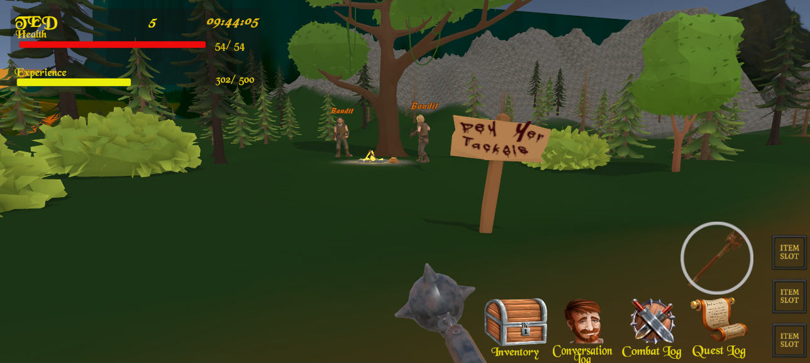
 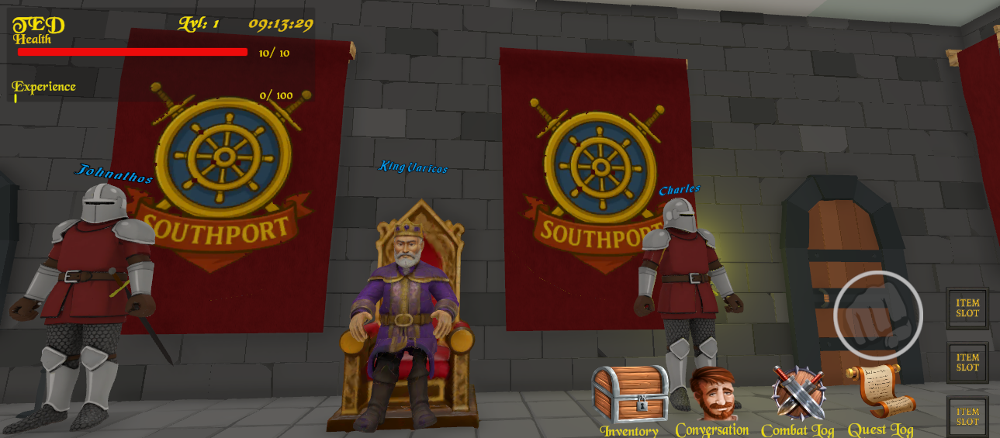
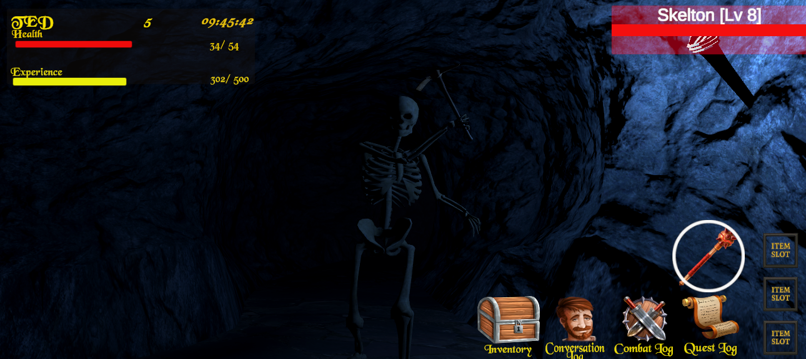
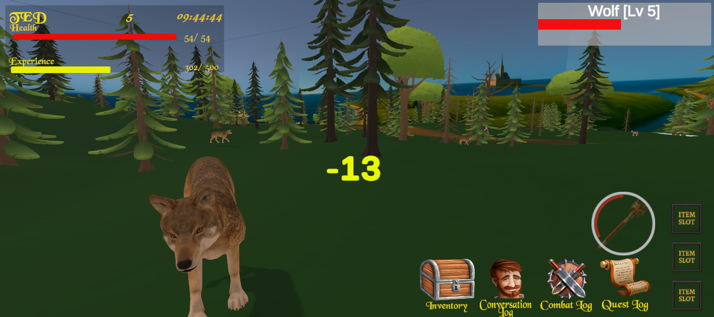
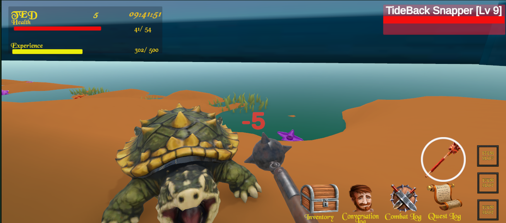
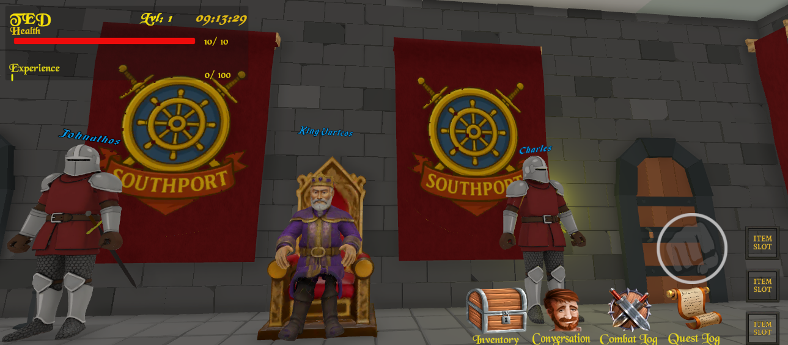
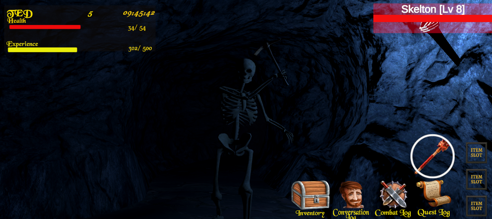
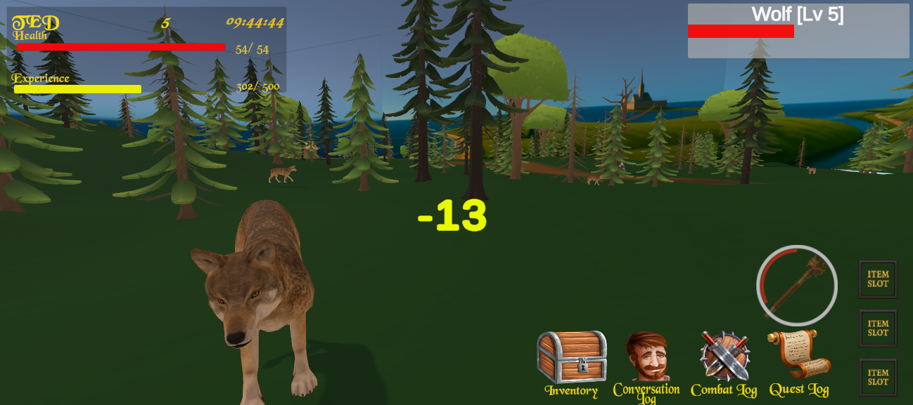
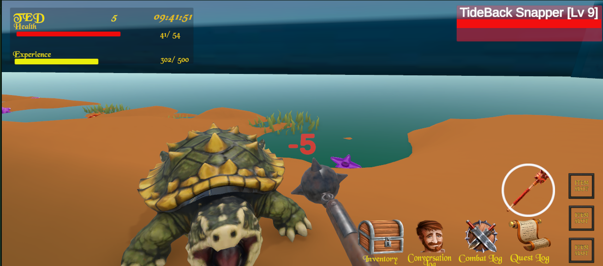
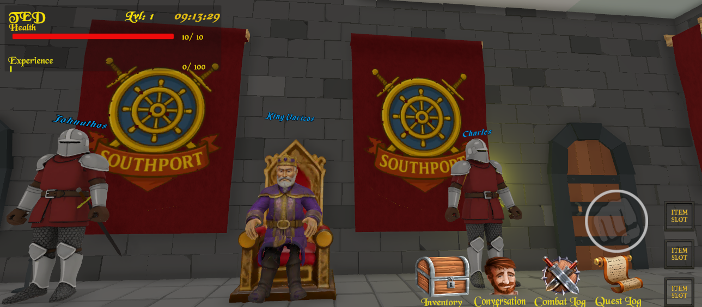
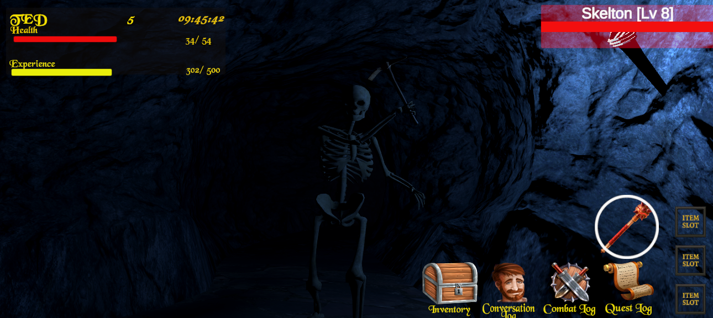
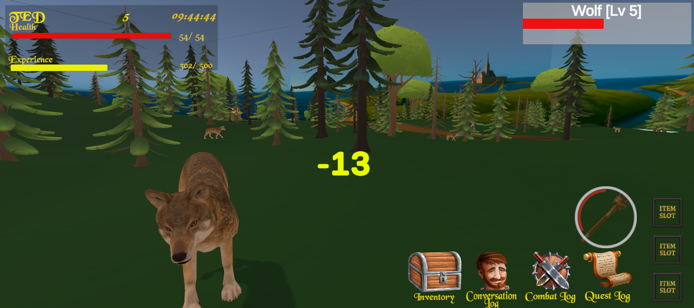
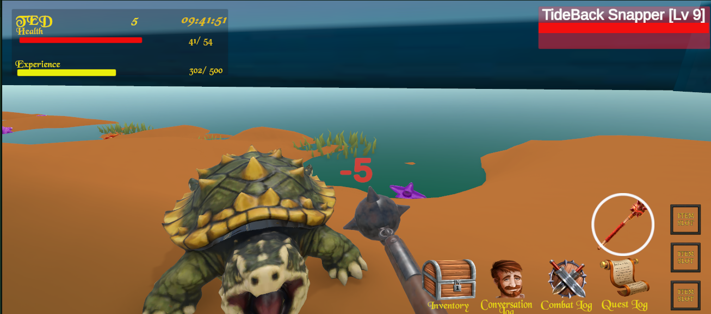
Untitled RTS
Top-down Strategy
A session-based tactical RTS designed for constrained, offline-first platforms.
Status: Early concept